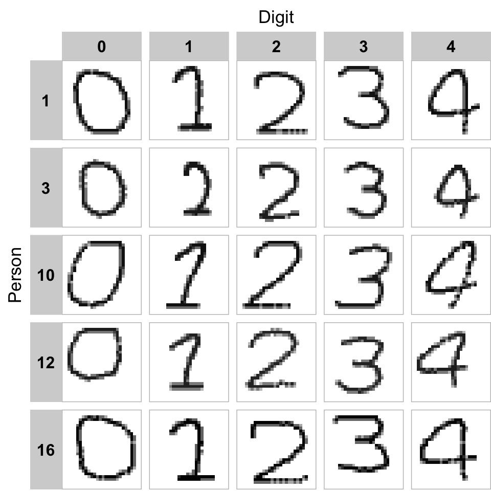
Image classification with neural networks
STA5073Z Data Science for Industry: Assignment 2
1 Introduction
Handwriting styles vary between individuals and develop over years of practice, making handwriting a distinctive yet subtle biometric trait. Writer identification from handwritten samples has practical applications in forensic document examination, authorship attribution, and biometric authentication (Abushahla et al. 2026; Bromley et al. 1993). Advances in machine learning enable models to learn discriminative features directly from raw images, providing an opportunity to investigate how effectively different architectures capture writer-specific characteristics.
This report uses a dataset of 25,000 images of handwritten digits (0-4), contributed by 20 writers over 5 sessions, with 50 samples per digit, writer and session. The dataset enables investigation of within-session and between-session variation, while its limited number of writers and structured sampling inform the experimental design and evaluation strategy.
Convolutional neural networks (CNNs) are a class of neural networks designed to hierarchically learn spatial features from image data (Reza et al. 2026; Yamashita et al. 2018). Convolutional layers apply filters to learn local patterns such as stroke edges and curves and pooling layers summarise these features into lower-dimensional representations, retaining the most important information while reducing sensitivity to small positional changes. The extracted features are subsequently passed to fully connected layers, which produce predictions over the possible writer classes, with the final layer outputting a probability distribution across the classes. In this application, the CNN is trained to answer: which writer produced this image?
Siamese neural networks (SNNs) reframe this question. Rather than assigning an image to a writer, an SNN takes two images and asks: were these written by the same person? Both images are processed by identical CNN subnetworks with shared weights, producing embeddings that represent learned visual characteristics. The distance between the embeddings provides a measure of the similarity between the two samples. The network is trained to encourage same-writer images to have embeddings close together and push different-writer embeddings further apart, using a contrastive loss function. A threshold on the embedding distance then converts it into a binary classification of same or different (He 2025).
Introduced originally for signature verification (Bromley et al. 1993) and subsequently applied to other recognition tasks, SNNs have demonstrated potential across a range of applications, including signature identification (Herman et al. 2026) and malware image classification (Hsiao et al. 2019). Their ability to learn pairwise similarities makes them well-suited to handwriting verification. Moreover, their effectiveness in one-shot learning has been demonstrated in malware image classification, where similarity-based learning enables classification with limited training data (Hsiao et al. 2019). In the context of handwriting verification, evaluating performance on writers excluded from training provides a means of assessing the model’s ability to generalise to unseen writers.
This report compares CNN-based writer identification and SNN-based writer verification to investigate how effectively each approach distinguishes individual writing styles in handwritten digit images. It explores the dataset, evaluates both architectures, and compares their performance across hyperparameter configurations, writing sessions, and digit classes, highlighting their respective strengths and limitations.
2 Exploratory data analysis
The provided dataset consists of a four-dimensional array containing 25,000 images of handwritten digits, along with associated metadata. Each image has a resolution of 28 x 28 pixels and contains a single channel representing greyscale intensity. The five digits from 0 - 4 were each written 50 times by 20 different individuals during each of the five independent sessions. The array contains no missing values, indicating all images and associated metadata were complete. Pixel values ranged from 0, indicating a blank background, to 255, representing a pixel with maximal intensity.
Variation arose between individuals in several ways (Figure 1), including differences in digit size, particularly for the digit 0. As shown in (Figure 1), individuals 3 and 12 had much smaller 0s than individuals 1, 10, and 16. The angle and curvature of strokes also varied. For example, the vertical stroke in digit 1 was straight for individual 1, more curved for individual 3 and straight but more diagonal for individual 10. Similarly, the diagonal and vertical strokes in digit 4 varied in angle and curvature across individuals. The digit 0 also tilted in different directions for individuals 10 and 12 compared to 1,3, and 16 (Figure 1).
Although inter-individual variation was more pronounced, variation was still observed within individuals, both across sessions (Figure 2) and within a given session (Figure 3). Repeated samples of a given digit by the same individual tended to be similar in size. However, some variation once again arose in the angle and curvature of strokes, such as the top-right corner of the digit 0 and the angle of the bottom horizontal stroke of the digit 2 (Figure 2).
Intra-individual variation was more apparent across different sessions than within the same session. For individual 16, the bottom stroke of the digit 2 was more consistent across samples in the same session than across different sessions. Within the same individual and session, there was more variation in pixel intensity, as illustrated by the bottom horizontal stroke of the digit 1 (Figure 3).
There are several visible limitations to the simulated handwritten digit data. First, some digits contain unusually straight lines and sharp angles in digits where these are unlikely to occur in natural handwriting. An example is the top-right corner of the digit 0 for individual 10 (Figure 1). Second, line continuity is sometimes interrupted, as seen in the gaps in the digit 2 across sessions 3, 4 and 5 for individual 16 (Figure 2) and in all selected samples for digit 2 from session 1 (Figure 3).
Furthermore, the simulated data does not capture variation in stroke thickness that would arise from variable pressure during real-world writing. There is also limited variation in digit style; for example, the digit 1 can be written as a single vertical line, which is not represented in the simulated data. In some cases, the simulated data also appears unrealistic. For instance, individual 3’s digit 1 which closely resembles a 2, making it difficult to identify the intended digit.
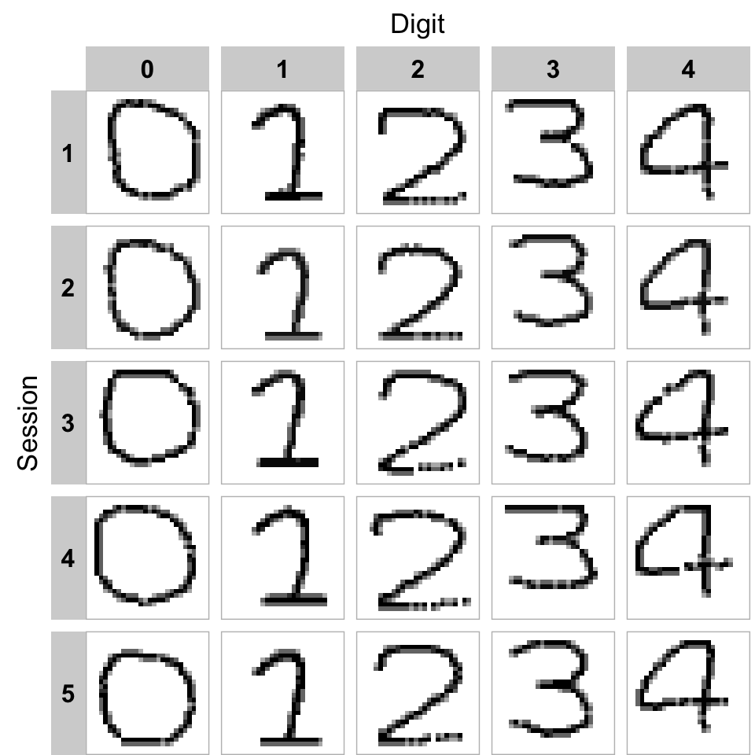
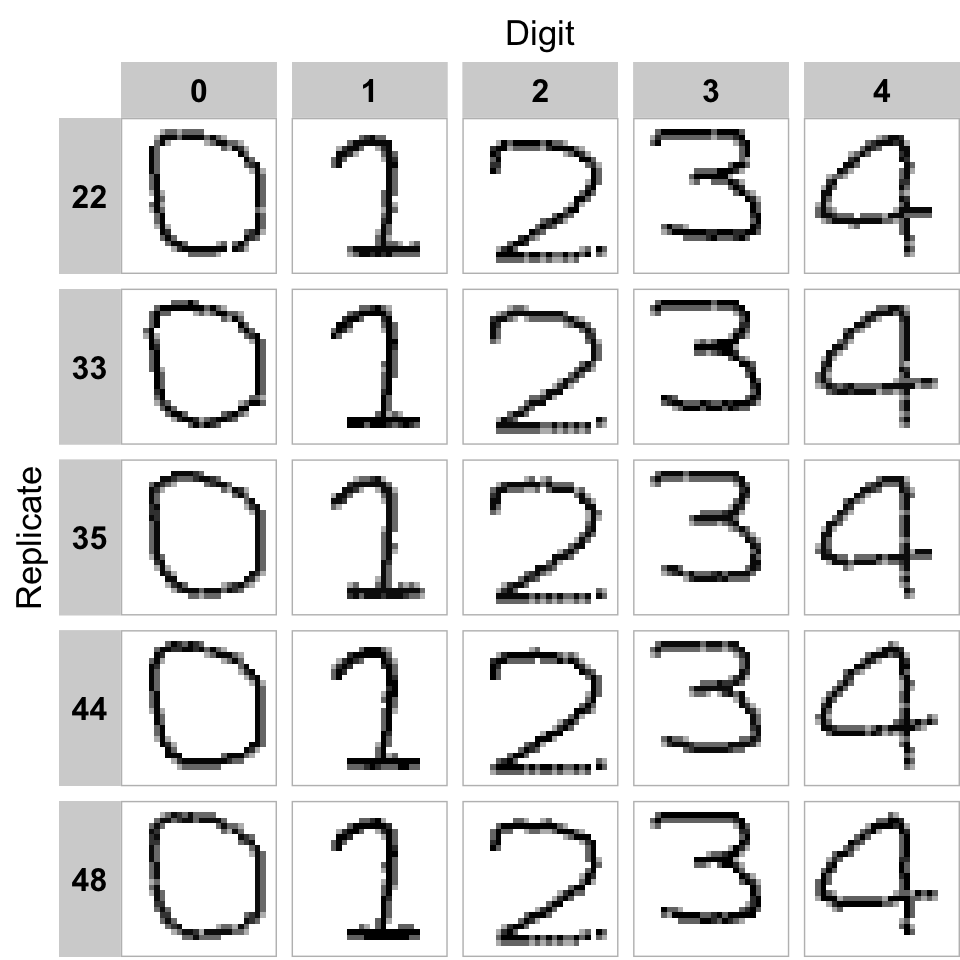
3 Train, validation and test strategy
The Siamese network and the CNN used different data-splitting strategies to reflect their distinct tasks: the Siamese network was split by writer, while the CNN was split by session. However, the proportions were kept consistent for both models: 60% for training, 20% for validation, and 20% for testing.
The CNN dataset was split at the session-level. Since the task was writer-identification, the model had to be trained on images from all writers and evaluated on its performance on the sessions held out from training. This evaluation reflects the scenario: given a set of handwritten images from a new session, how accurately can the model identify the writer? A limitation of this strategy is the small number of available sessions, with three used for training, one for validation and one for testing.
The Siamese network dataset was split at the writer level to ensure that no writer appeared in more than one set. A random image-level split was avoided, as this would allow the same writer to appear in both training and test sets, potentially producing an overly optimistic estimate of the model’s generalisability. Testing on unseen writers provides a more meaningful assessment of the model’s ability to verify handwriting from individuals not encountered during training. This evaluation reflects how the model would perform in a real-world setting; for example, verifying whether two documents were written by the same previously unseen individual. Image pairs were constructed independently within each split to prevent images from overlapping across the test, train and validation datasets. The digits and whether the images were from the same or different sessions for a given pair were random rather than being specified during pair construction.
A key limitation of this strategy is the small number of writers in this dataset. With only 20 writers in total, the split allocates just four writers to each of the validation and test sets, making performance estimates noisy and sensitive to which writers were assigned to each set. Furthermore, the decision threshold was selected by maximising balanced accuracy on the validation set and is therefore optimised for those four specific writers, which may limit its generalisability to other unseen writers.
For both models, the test set was kept independent and used only for final evaluation, providing an unbiased assessment of model performance on the held-out data.
4 Writer identification with a CNN
The prediction task is closed-set writer identification: given a single 28 x 28 image of a digit, the model predicts which of the 20 writers produced it. The CNN follows the structure of the lecture example (Table 1). It was trained on sessions 1-3, with session 4 used for validation and to decide when to stop training. Session 5 was held out as the test set, ensuring that all test images come from a session not seen during training.
4.1 Model structure
| Layer (type) | Output shape | Parameters |
|---|---|---|
| input_layer (InputLayer) | (None, 28, 28, 1) | 0 |
| conv2d (Conv2D) | (None, 26, 26, 16) | 160 |
| activation (Activation) | (None, 26, 26, 16) | 0 |
| dropout (Dropout) | (None, 26, 26, 16) | 0 |
| conv2d_1 (Conv2D) | (None, 24, 24, 16) | 2320 |
| max_pooling2d (MaxPooling2D) | (None, 12, 12, 16) | 0 |
| flatten (Flatten) | (None, 2304) | 0 |
| dense (Dense) | (None, 20) | 46100 |
| Total | 48580 |
4.2 Training
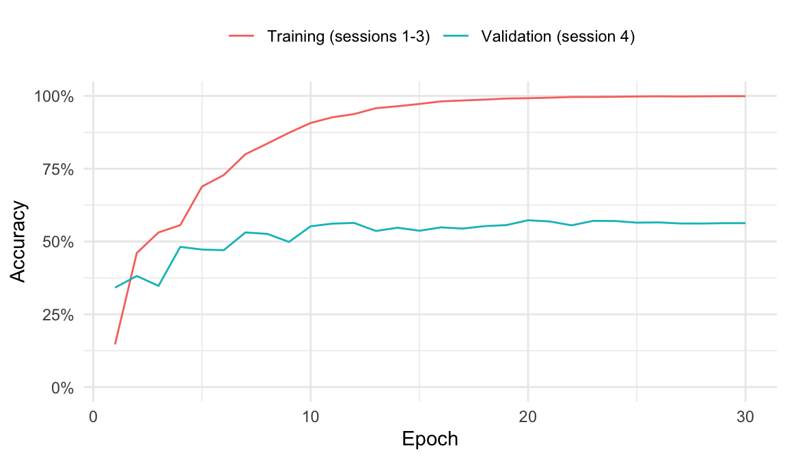
4.3 Writer identification performance
4.3.1 What the evaluation measures capture
In real-world terms, accuracy represents the proportion of handwritten digit images correctly attributed to the writer, assuming the writer is one of the 20 enrolled individuals and the digit was written in a session not used for training. A system based on this model would correctly identify the writer from a single digit approximately half the time. However, this measure says nothing about individuals outside the 20 enrolled writers, as the model would still assign images to one of them. Accuracy by digit indicates which digits may contain more writer-specific information, while the confusion matrix shows which writers are most frequently mistaken for one another. This is particularly relevant when an incorrect attribution has consequences for the person identified.
4.3.2 Results of the basic CNN
On the test session, the CNN named the correct writer for 50.1% of images (Table 2), compared with 5% expected baseline (random guessing). Accuracy differed by digit (Table 3): it was highest for digit 2 (59.1%) and lowest for digit 0 (44.5%). Each digit has 1000 test images from the single session that was not used in training or validation.
4.3.3 Error analysis
Errors were concentrated in particular writers (Table 4). Three writers were identified in at least 95% of their images, whereas writers 5, 10, and 13 were identified in at most 5% of theirs; for example, 243 of the 250 images from writer 10 were attributed to writer 2.
4.3.4 Overfitting
The CNN overfits to the training sessions (Figure 4). Validation accuracy came within two percentage points of its maximum (57.3%) by epoch 11 and then stayed flat, while training accuracy kept rising to 99.9% by the end of training at epoch 30. The later epochs therefore appear to have fitted features of the training sessions that did not generalise to a new session. Validation accuracy did not fall, so the additional training gave no benefit. For this reason, the hyperparameter search uses the earliest epoch whose validation accuracy was within one standard error of the best observed value, rather than continuing training unnecessarily.
| Set | Images | Accuracy (%) |
|---|---|---|
| Validation (session 4) | 5000 | 57.3 |
| Test (session 5) | 5000 | 50.1 |
| Digit | Images | Accuracy (%) |
|---|---|---|
| 2 | 1000 | 59.1 |
| 1 | 1000 | 51.0 |
| 4 | 1000 | 49.5 |
| 3 | 1000 | 46.4 |
| 0 | 1000 | 44.5 |
| True writer | 1 | 2 | 3 | 4 | 5 | 6 | 7 | 8 | 9 | 10 | 11 | 12 | 13 | 14 | 15 | 16 | 17 | 18 | 19 | 20 |
|---|---|---|---|---|---|---|---|---|---|---|---|---|---|---|---|---|---|---|---|---|
| 1 | 97 | 0 | 0 | 0 | 0 | 0 | 0 | 0 | 0 | 0 | 0 | 0 | 0 | 0 | 0 | 53 | 0 | 0 | 50 | 50 |
| 2 | 50 | 138 | 0 | 0 | 0 | 21 | 0 | 0 | 0 | 0 | 0 | 0 | 0 | 0 | 0 | 27 | 0 | 0 | 0 | 14 |
| 3 | 49 | 0 | 110 | 1 | 0 | 0 | 40 | 0 | 50 | 0 | 0 | 0 | 0 | 0 | 0 | 0 | 0 | 0 | 0 | 0 |
| 4 | 0 | 0 | 0 | 99 | 0 | 0 | 0 | 62 | 0 | 49 | 0 | 40 | 0 | 0 | 0 | 0 | 0 | 0 | 0 | 0 |
| 5 | 0 | 0 | 0 | 0 | 0 | 0 | 0 | 0 | 0 | 0 | 0 | 0 | 194 | 0 | 0 | 50 | 0 | 0 | 0 | 6 |
| 6 | 0 | 0 | 0 | 0 | 0 | 248 | 0 | 0 | 0 | 0 | 0 | 0 | 0 | 0 | 0 | 1 | 1 | 0 | 0 | 0 |
| 7 | 0 | 0 | 0 | 0 | 0 | 0 | 250 | 0 | 0 | 0 | 0 | 0 | 0 | 0 | 0 | 0 | 0 | 0 | 0 | 0 |
| 8 | 0 | 0 | 0 | 7 | 175 | 0 | 0 | 61 | 0 | 0 | 0 | 2 | 5 | 0 | 0 | 0 | 0 | 0 | 0 | 0 |
| 9 | 0 | 0 | 50 | 0 | 0 | 0 | 0 | 0 | 150 | 0 | 0 | 50 | 0 | 0 | 0 | 0 | 0 | 0 | 0 | 0 |
| 10 | 0 | 243 | 0 | 0 | 0 | 0 | 0 | 0 | 0 | 7 | 0 | 0 | 0 | 0 | 0 | 0 | 0 | 0 | 0 | 0 |
| 11 | 50 | 0 | 0 | 0 | 0 | 0 | 0 | 0 | 0 | 0 | 200 | 0 | 0 | 0 | 0 | 0 | 0 | 0 | 0 | 0 |
| 12 | 0 | 50 | 0 | 39 | 5 | 0 | 0 | 61 | 0 | 0 | 0 | 95 | 0 | 0 | 0 | 0 | 0 | 0 | 0 | 0 |
| 13 | 5 | 0 | 0 | 0 | 86 | 0 | 19 | 75 | 0 | 0 | 0 | 1 | 0 | 0 | 0 | 38 | 0 | 0 | 0 | 26 |
| 14 | 0 | 0 | 0 | 0 | 0 | 0 | 1 | 0 | 94 | 0 | 0 | 0 | 6 | 100 | 49 | 0 | 0 | 0 | 0 | 0 |
| 15 | 0 | 0 | 0 | 0 | 0 | 0 | 0 | 0 | 0 | 0 | 0 | 0 | 0 | 3 | 192 | 0 | 0 | 0 | 55 | 0 |
| 16 | 90 | 0 | 0 | 0 | 50 | 0 | 0 | 0 | 0 | 0 | 0 | 0 | 0 | 0 | 0 | 104 | 0 | 0 | 6 | 0 |
| 17 | 0 | 0 | 0 | 0 | 0 | 4 | 0 | 0 | 0 | 0 | 0 | 0 | 0 | 0 | 0 | 50 | 196 | 0 | 0 | 0 |
| 18 | 0 | 0 | 0 | 0 | 0 | 0 | 0 | 0 | 0 | 0 | 0 | 0 | 0 | 0 | 0 | 0 | 0 | 250 | 0 | 0 |
| 19 | 1 | 0 | 2 | 0 | 82 | 0 | 0 | 0 | 17 | 0 | 0 | 0 | 0 | 48 | 0 | 0 | 0 | 0 | 100 | 0 |
| 20 | 11 | 51 | 0 | 0 | 0 | 19 | 15 | 0 | 0 | 0 | 0 | 0 | 0 | 0 | 0 | 46 | 0 | 0 | 0 | 108 |
4.4 CNN hyperparameter search
Three hyperparameters were tuned: learning rate, dropout rate and the number of filters in the two convolution layers. The layer structure and batch size were fixed. Each combination was evaluated using four-fold cross-validation (CV) over sessions 1-4, with one session held out per fold; session 5 was not used. Validation accuracy was recorded after each epoch and the number of epochs was set to the earliest epoch within one standard error (SE) of the best observed validation accuracy to help guard against overfitting. A coarse grid search was followed by a refined grid search around its best-performing region.
4.4.1 Coarse grid
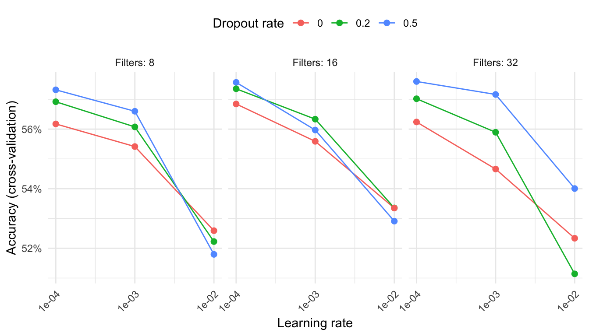
| Learning rate | Dropout rate | Filters | Best CV accuracy (%) | Standard error (%) | Best epoch | One-SE epoch | CV accuracy at one-SE epoch (%) |
|---|---|---|---|---|---|---|---|
| 0.0001 | 0.5 | 32 | 57.6 | 2.2 | 11 | 4 | 55.9 |
| 0.0001 | 0.5 | 16 | 57.6 | 2.0 | 14 | 7 | 55.8 |
| 0.0001 | 0.2 | 16 | 57.4 | 1.4 | 16 | 7 | 56.0 |
| 0.0001 | 0.5 | 8 | 57.3 | 1.7 | 19 | 10 | 55.9 |
| 0.001 | 0.5 | 32 | 57.2 | 2.4 | 1 | 1 | 57.2 |
Learning rate had the largest effect on CV accuracy (Figure 5): averaged over the other two hyperparameters, CV accuracy fell from 57.0% at a learning rate of 0.0001 to 52.6% at 0.01. Dropout had a smaller effect (54.8% with no dropout, 55.7% at 0.5), while the number of filters had little effect (55.0% to 55.5%). The best-performing learning rate and dropout rate were both at the edge of the coarse grid (Table 5), so the refined grid extended the ranges of both hyperparameters and fixed the number of filters at 16. Due to the lower learning rate, the refined grid used 40 epochs instead of 20.
4.4.2 Refined grid
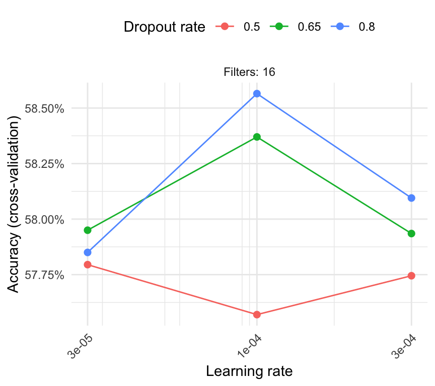
| Learning rate | Dropout rate | Filters | Best CV accuracy (%) | Standard error (%) | Best epoch | One-SE epoch | CV accuracy at one-SE epoch (%) |
|---|---|---|---|---|---|---|---|
| 0.0001 | 0.8 | 16 | 58.6 | 2.0 | 32 | 11 | 57.0 |
| 0.0001 | 0.7 | 16 | 58.4 | 2.1 | 14 | 9 | 56.8 |
| 0.0003 | 0.8 | 16 | 58.1 | 1.9 | 12 | 5 | 56.3 |
| 0.00003 | 0.7 | 16 | 58.0 | 2.1 | 38 | 23 | 55.8 |
| 0.0003 | 0.7 | 16 | 57.9 | 1.4 | 14 | 5 | 56.5 |
The refined grid showed little variation in CV accuracy (Figure 6): its nine combinations ranged only from 57.6% to 58.6%, a range smaller than the standard error of a single combination (approximately 2 percentage points). This suggested the search had reached a plateau.
4.4.3 Selected model and sensitivity
The hyperparameter combination with the highest CV accuracy had a learning rate of 0.0001, a dropout rate of 0.8 and 16 filters (Table 6). Its CV accuracy peaked at epoch 32 (58.6%) but was within one SE of that from epoch 11 (57.0%), so 11 epochs were used (Figure 7).
Across both grids, CV accuracy ranged from 51.1% to 58.6%. Writer identification accuracy was therefore moderately sensitive to the learning rate, which accounted for most of this variation, but showed little sensitivity to dropout rate and number of filters across the values tested.
No hyperparameter combination resulted in substantial improvement in model performance, with the hyperparameter-tuned model identifying the correct writer only around 55% of the time. Although this is better than random guessing, the model remains relatively unsuitable for the task. Whether this is due to the model architecture or the limited amount of data (only five sessions) is unclear.
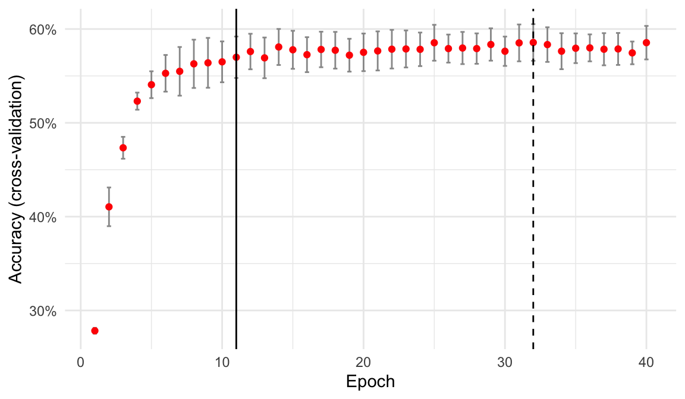
| Digit | Images | Accuracy (%) |
|---|---|---|
| 2 | 1000 | 56.5 |
| 4 | 1000 | 53.4 |
| 3 | 1000 | 52.9 |
| 1 | 1000 | 51.8 |
| 0 | 1000 | 51.4 |
| All digits | 5000 | 53.2 |
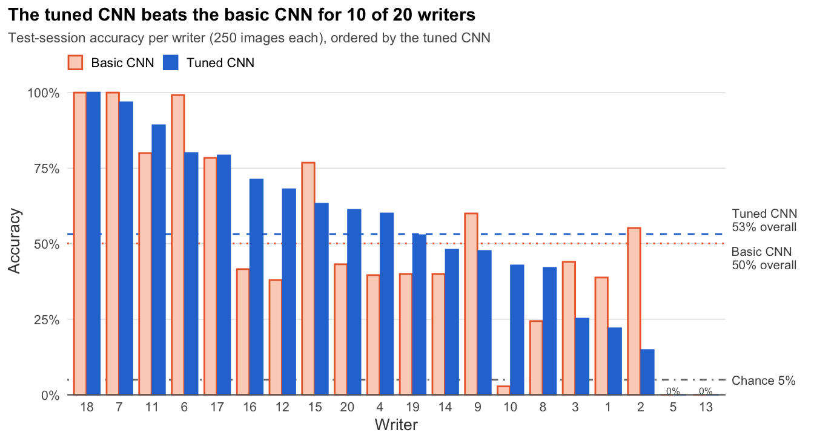
Retrained on sessions 1-4 with the selected hyperparameters, the CNN identified the writer correctly for 53.2% of test images (Table 7), compared with 50.1% for the untuned model. These results are not directly comparable, because the tuned model was also trained on one additional session. Test accuracy was lower than the CV estimate (57.0%), which is expected because the CV estimate was also used to select the hyperparameters (Varma and Simon 2006) and because sessions may differ in difficulty. Accuracy across digits was more consistent than for the untuned model, ranging from 51.4% to 56.5%. By writer (Figure 8), the tuned model was more accurate than the basic model for 10 writers and less accurate for 7; writers 5 and 13 were almost never correctly identified by either model.
5 Writer verification with a Siamese network
A Siamese neural network was trained on the handwriting images and evaluated to assess how accurately it could capture whether two digits were written by the same writer. The data were split into 60% training, 20% validation, and 20% test sets. Data were grouped by writer, with different writers assigned to each set, to ensure that the network learnt to recognise similarities in writing style without exposure to the validation and test writers during training. This allowed the model’s generalisability to unseen writers to be tested. However, since there were only 20 writers, this split meant that only 4 writers were included in each of the validation and test sets. This is a significant limitation and is discussed further in Train, validation and test strategy.
5.1 Pair construction
We controlled for digit identity by constructing pairs consisting of the same digits. Therefore, a positive pair for this network consisted of two different images of the same digit written by the same person, and a negative pair contained two images of the same digit but by different writers. Examples of pairs from the training and validation datasets are shown in Figure 9. We employed a balanced pair sampling approach with half of the pairs being positive and the remaining half negative to ensure the Siamese network learned effectively (Chopra et al. 2005).
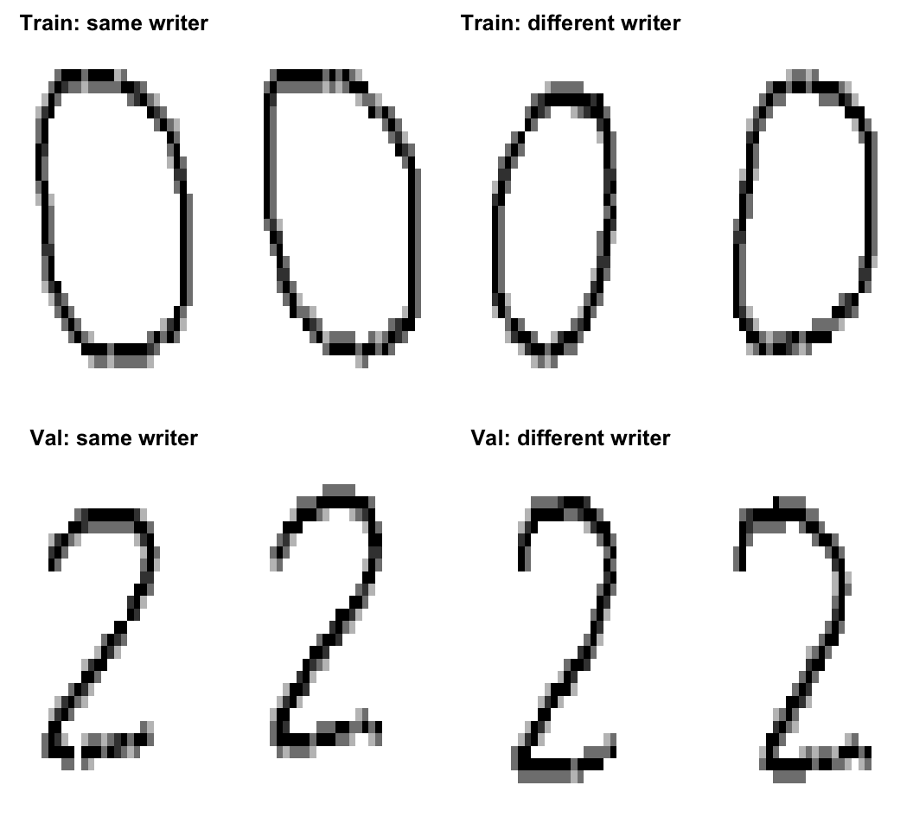
5.2 Model structure
We used contrastive loss, introduced by Hadsell et al. (2006), to train the Siamese network. This loss function was chosen over triplet loss because our interest is in distinguishing same-writer from different-writer pairs, rather than learning a relative ranking of dissimilarity between triplets. Additionally, this is a simple binary verification task and the dataset is relatively small. Contrastive loss may therefore be particularly suitable for this setting, given evidence that it can converge faster than triplet loss (Herman et al. 2026). The contrastive loss for a pair is:
\[ L = yD^2 + (1-y)\max(0,m-D)^2 \] where \(y\) is a binary label with \(y\) = 1 for a positive pair (i.e., the same writer and same digit) and \(D\) is the Euclidean distance between the embeddings. The hyperparameter \(m\) defines the margin: similar pairs incur near-zero loss when their embeddings are close (\(d\) is small), while dissimilar pairs incur zero loss only if their distance is at least \(m\). This encourages the network to minimise distances between embeddings from the same writer and maximise distances between embeddings from different writers, up to the margin (Elaraby et al. 2023). The margin for the initial Siamese network was set to 1, but was optimised in a hyperparameter search in Hyperparameter optimisation.
The shared CNN encoder consisted of two convolutional layers with 16 and 32 filters, respectively, each using a filter size of 3 and a ReLU activation function to introduce non-linearity. A max pooling layer with a pool size and stride of 2 was placed between these convolutional layers. The convolutional layers learn local image features while max pooling reduces the spatial dimensions of the feature maps. The last two layers were a global average pooling layer which converts the feature maps into a vector and a dense layer mapping the vector to a 16-dimensional embedding. A relatively simple encoder is used since the input images are low-resolution and contain features such as curves and strokes that the network can learn from these images.
5.3 Training
In the Siamese model, pairs of images are supplied to the encoder to produce their embeddings and then the Euclidean distance between each pair is calculated. The model was compiled using the Adam optimiser and used the above contrastive loss function which was calculated using the Euclidean distances and a margin of one, and averaged for every batch. The number of epochs was set to 5 and the batch size to 64.
We compared the balanced accuracy for same and different digit pairs from the validation set at different Euclidean distance thresholds, and chose the threshold which maximised the balanced accuracy. The different thresholds tested were all the actual distances between the validation pairs. The selected threshold was 0.44, giving a validation balanced accuracy of 78.67%.
5.4 Writer verification performance
The generalisability of our model was evaluated by predicting on unseen writers’ digit image-pairs in the test set and calculating the balanced accuracy. Balanced accuracy was also calculated by digit to assess how performance varied for different digits (Table 8) and calculated separately for pairs in the same and different sessions to assess how session changes affect performance (Table 9). We did not specify how many of each digit to use nor whether images should be from the same or different sessions when creating pairs of images. Thus, the number of pairs of images of each digit, and whether the pair was from the same session or not were random with ratios related to the proportion of images of each digit (1:1:1:1:1; Table 8) and the proportion of images in the same and different sessions in the test set (1:4; Table 9). Examples of test pairs with predicted and true labels are shown in Figure 10.
| Digit | Image pairs | Test balanced accuracy (%) |
|---|---|---|
| 4 | 986 | 86.4 |
| 3 | 1020 | 85.2 |
| 1 | 980 | 82.8 |
| 0 | 1022 | 82.7 |
| 2 | 992 | 76.5 |
| All digits | 5000 | 82.8 |
| Session | Image pairs | Test balanced accuracy (%) |
|---|---|---|
| Same session | 1003 | 94.4 |
| Different session | 3997 | 79.7 |
| All sessions | 5000 | 82.8 |
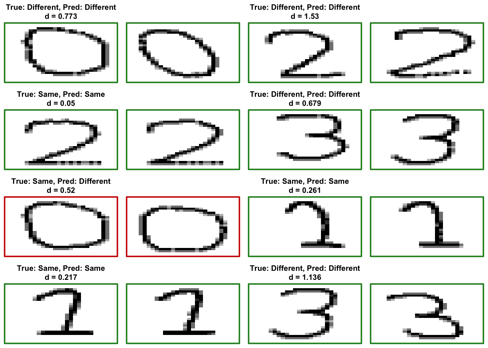
5.5 Siamese network hyperparameter search
For the Siamese neural network, the margin \(m\), learning rate, and batch size were tuned using a grid search, while the CNN encoder architecture and number of epochs were fixed. For each hyperparameter combination, the validation balanced accuracy was calculated at different thresholds, and the threshold that maximised balanced accuracy was selected. Using the same validation dataset to select the threshold and evaluate balanced accuracy is a limitation. Ideally, the validation data would be divided into two sets, with one used to calculate the threshold from and the other to evaluate balanced accuracy at that threshold. However, because the validation pairs were constructed from only four writers, this dataset was too small to split meaningfully. As with the CNN hyperparameter tuning, a coarse grid search using 36 combinations of hyperparameters (Figure 11) was followed by a refined grid search involving 9 combinations around the best-performing region in the coarse grid (Figure 12).
5.5.1 Coarse grid
Once again, learning rate had the largest effect on balanced accuracy (Figure 11). Averaged across the other two hyperparameters, balanced accuracy fell from 79.14% at a learning rate of 0.01 to 73.51% at 0.0001. Both the margin (76.02% at \(m\) = 2 up to 78.31% at \(m\) = 0.5) and the batch size (75.39% at a batch size of 128, compared with 78.2% at 32) had smaller effects on balanced accuracy. The best-performing learning rate and margin were at the edge of the coarse grid (Figure 11), so the refined grid extended the ranges of both variables and fixed the batch size at 32 (Figure 12). The number of epochs was fixed at 5 across both grids.
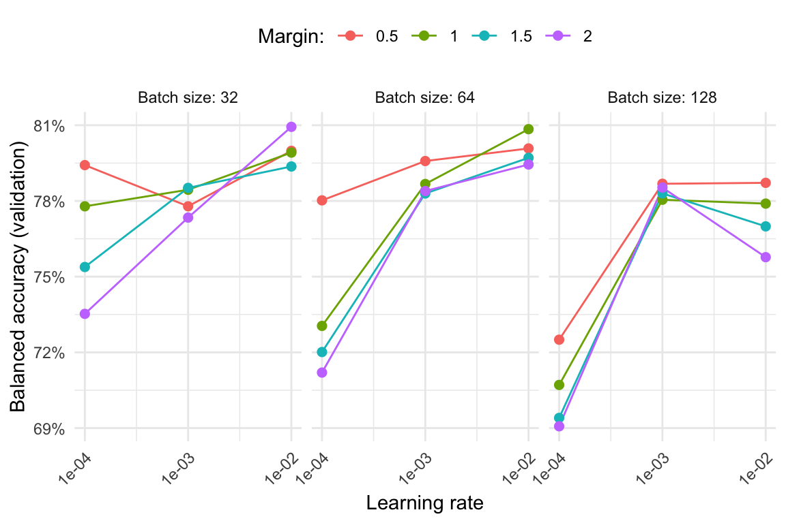
| Margin | Learning rate | Batch size | Validation balanced accuracy (%) |
|---|---|---|---|
| 2.0 | 0.01 | 32 | 80.9 |
| 1.0 | 0.01 | 64 | 80.8 |
| 0.5 | 0.01 | 64 | 80.1 |
| 0.5 | 0.01 | 32 | 80.0 |
| 1.0 | 0.01 | 32 | 79.9 |
5.5.2 Refined grid
The hyperparameters selected from the refined grid search that achieved the highest balanced accuracy of 80.94% were a learning rate of 0.01, a margin of 2 and a batch size of 32 (Table 11).
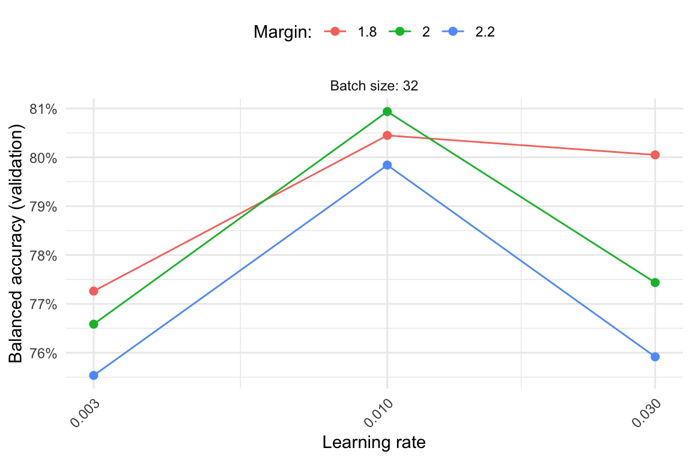
| Margin | Learning rate | Batch size | Validation balanced accuracy (%) |
|---|---|---|---|
| 2.0 | 0.01 | 32 | 80.9 |
| 1.8 | 0.01 | 32 | 80.4 |
| 1.8 | 0.03 | 32 | 80.1 |
| 2.2 | 0.01 | 32 | 79.8 |
| 2.0 | 0.03 | 32 | 77.4 |
5.5.3 Selected model and sensitivity
The model was retrained on the training data using the selected hyperparameters and was evaluated on the test set. Balanced accuracy was calculated overall, by digit (Table 12), and by whether the image pairs came from the same or different sessions (Table 13). Interestingly, the test balanced accuracy was higher than the validation accuracy. This is likely due to different writers having different levels of variability in their handwriting style and the limited test and validation sets each only containing four writers. The test set may have had writers whose handwriting styles were more distinguishable from each other than the writers in the validation set. Overall, the tuned model achieved higher test balanced accuracy than that of the initial model.
| Digit | Image pairs | Test balanced accuracy (%) |
|---|---|---|
| 3 | 1020 | 85.2 |
| 0 | 1022 | 85.2 |
| 4 | 986 | 84.4 |
| 1 | 980 | 83.6 |
| 2 | 992 | 81.7 |
| All digits | 5000 | 84.1 |
| Session | Image pairs | Test balanced accuracy (%) |
|---|---|---|
| Same session | 1003 | 93.0 |
| Different session | 3997 | 81.8 |
| All sessions | 5000 | 84.1 |
6 Comparing the CNN and Siamese results
The CNN and Siamese network were employed on different tasks; for writer identification and writer verification, respectively. Their accuracy metrics are not directly comparable. Nevertheless, both tuned models substantially outperformed what would be expected by chance: the CNN achieved a test accuracy of 53.2% (compared with a 5% baseline for classifying one out of 20 writers) and the SNN a test balanced accuracy of 84.1% (compared with 50% baseline for binary verification of same- vs different-writer). These results indicate that both networks learned useful writer-related features for their respective tasks.
At the digit level, the networks had varied performance. The tuned CNN’s identification accuracy ranged from 51.4% for digit 0 to 56.5% for digit 2 (Table 7). In comparison, the tuned SNN’s balanced accuracy ranged from 81.7% for digit 2 to 85.2% for digit 3 (Table 12). Notably, digit 2 had the highest identification accuracy for the CNN but the lowest balanced accuracy for the SNN.
Although the results may initially appear contradictory, they suggest that the usefulness of a digit depends on the nature of the task being performed. Digits achieving a high identification accuracy (CNN) and low balanced accuracy (SNN) (e.g., digit 2) means that 2 can help to distinguish among the writers represented in the training data, but that the same digit does not provide equally useful information in verifying whether two samples were written by the same writer.
Conversely, digits with high balanced accuracy (SNN) and low accuracy (CNN) may provide useful evidence for distinguishing same-writer from different-writer pairs, without being sufficiently distinctive to identify a particular writer from the 20 known writers. For example, digit 0 may exhibit this pattern, while digits 3 and 4 achieved mid-to-high performance across both metrics, suggesting they are useful in both tasks. However, it is important to note that these interpretations are suggestive rather than definitive, as these models were evaluated using different data splits and under different generalisation settings.
Session-related performance was assessed using the SNN, by comparing performance for pairs drawn from the same sessions with pairs from different sessions. This was not possible for the CNN, because its session-level split was designed to perform writer identification on held-out sessions. The SNN achieved higher balanced accuracy for same-session pairs than for different-session pairs (93% versus 81.8%). This result is consistent with our expectation that writer variation across sessions makes verification more difficult. However, this difference alone does not establish which sources of variation were responsible (e.g., natural writer variation, different writing materials).
Performance also varied considerably across writers in the CNN evaluation. The model identified writers 7 and 18 with near-perfect accuracy, whereas it nearly always misclassified samples from writers 5 and 13. This suggests that some writers had handwriting that was far more distinguishable than the others. Because the SNN datasets were split by writer, we cannot compare the performance with respect to individual writers as directly, although we note that writers 5 and 13 happened to be in the validation set used for hyperparameter tuning, which may explain why validation accuracy was lower than test accuracy (80.9% versus 84.1%). The higher test result may reflect differences in the difficulty of discriminating between individuals in the validation and test writers, as well as sampling variability, rather than a general improvement in performance on unseen writers.
Finally, hyperparameter tuning indicated moderate sensitivity for both models to the learning rate. For the CNN, tuning the other hyperparameters offered no substantial additional improvements in performance, whereas a smaller batch size tended to improve the SNN’s balanced accuracy. We do note that there was some variability of performance on the test set with alternative seeds using the SNN suggesting that the hyperparameter tuning did not necessarily provide substantive improvement over the initial model.
Overall, the results demonstrate that both networks can learn useful features from handwritten images for writer identification and writer verification, while also highlighting the effects of digit choice, session variation, writer-specific differences, and evaluation design on measured performance.
7 Conclusion
This report used CNN and SNN models to investigate writer identification and pairwise writer verification, respectively, using handwritten digit images from 20 simulated writers across 5 sessions. The tuned CNN achieved a test accuracy of 53.2% compared with a 5% chance-level baseline, indicating that writer identity may be learnable from handwritten images alone, although generalisation to unseen writers remains untested. Similarly, the tuned SNN achieved a test balanced accuracy of 84.1% for pairwise verification. Its performance was higher for same-session versus different-session pairs (same-session: 93%; different-session: 81.8%), suggesting that session-related variation can make writer verification more challenging. Differences in per-digit performance between the two models, particularly the opposite pattern for digit 2 (the easiest for the CNN, but the hardest for the SNN), highlight the distinct properties of between-writer discrimination and within-writer consistency. Overall, the models provide complementary approaches to learning writer-related features. These findings are limited by the small number of writers, sessions and digits considered, as well as the use of simulated data rather than real handwritten images. Future work could address these limitations by evaluating CNNs and SNNs on larger datasets of real handwriting encompassing a greater diversity of writers, digits and recording sessions.
Plagiarism declaration
AI use statement
Abushahla, H. A., A. J. N. Panopio, L. Al-Khairulla, et al. 2026. “Different Strokes for Different Folks: Writer Identification for Historical Arabic Manuscripts.” International Journal on Document Analysis and Recognition, ahead of print. https://doi.org/10.1007/s10032-026-00596-4.
Bromley, Jane, James Bentz, Leon Bottou, et al. 1993. “Signature Verification Using a "Siamese" Time Delay Neural Network.” International Journal of Pattern Recognition and Artificial Intelligence 7 (August): 25. https://doi.org/10.1142/S0218001493000339.
Chopra, Sumit, Raia Hadsell, and Yann LeCun. 2005. “Learning a Similarity Metric Discriminatively, with Application to Face Verification.” Proceedings of the IEEE Computer Society Conference on Computer Vision and Pattern Recognition (CVPR) 1: 539–46. https://doi.org/10.1109/CVPR.2005.202.
Elaraby, Nagwa, Sherif Barakat, and Amira Rezk. 2023. “A Novel Siamese Network for Few/Zero-Shot Handwritten Character Recognition Tasks.” Computers, Materials & Continua 74 (1): 1837–54. https://doi.org/10.32604/cmc.2023.032288.
Hadsell, Raia, Sumit Chopra, and Yann LeCun. 2006. “Dimensionality Reduction by Learning an Invariant Mapping.” Proceedings of the IEEE Computer Society Conference on Computer Vision and Pattern Recognition (CVPR), 1735–42. https://doi.org/10.1109/CVPR.2006.100.
He, Zhengfang. 2025. “Text Similarity Based on Two Independent Channels: Siamese Convolutional Neural Networks and Siamese Recurrent Neural Networks.” Neurocomputing 643: 130355. https://doi.org/https://doi.org/10.1016/j.neucom.2025.130355.
Herman, C. G., A. A. S. Gunawan, and J. J. Tedjasulaksana. 2026. “Optimizing Siamese Networks for One-Shot Signature Verification: Contrastive Vs Triplet Loss.” 2026 International Conference on Advancement in Data Science, e-Learning and Information System (ICADEIS) (Bandung, Indonesia), 1–7. https://doi.org/10.1109/ICADEIS71120.2026.11644504.
Hsiao, Shou-Ching, Da-Yu Kao, Zi-Yuan Liu, and Raylin Tso. 2019. “Malware Image Classification Using One-Shot Learning with Siamese Networks.” Procedia Computer Science 159: 1863–71. https://doi.org/10.1016/j.procs.2019.09.358.
Reza, Md. Himel, Md. Noman Biswas Sibly, Shaikh Golam Rabbani, et al. 2026. “A Comprehensive Review of Convolutional Neural Networks: Foundations, Enhancements and Applications.” Neural Computing and Applications 38 (4): 56. https://doi.org/10.1007/s00521-025-11827-w.
Varma, Sudhir, and Richard Simon. 2006. “Bias in Error Estimation When Using Cross-Validation for Model Selection.” BMC Bioinformatics 7: 91. https://doi.org/10.1186/1471-2105-7-91.
Yamashita, Rikiya, Mizuho Nishio, Richard Kinh Gian Do, and Kaori Togashi. 2018. “Convolutional Neural Networks: An Overview and Application in Radiology.” Insights into Imaging 9 (4): 611–29. https://doi.org/10.1007/s13244-018-0639-9.